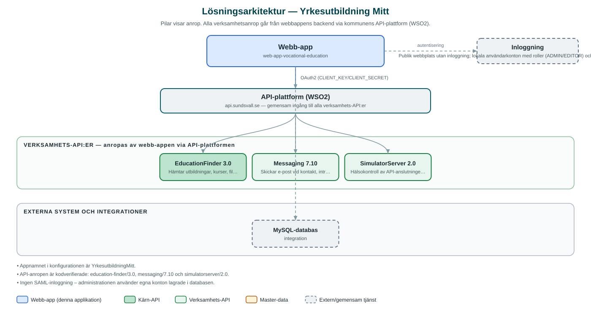

Yrkesutbildning Mitt
Publik webbplats där invånare kan söka, jämföra och intresseanmäla sig till yrkesutbildningar i regionen.
Om applikationen
Yrkesutbildning Mitt är en öppen webbplats som samlar yrkesutbildningar och kurser i Sundsvallsregionen. Besökare kan söka bland utbildningar, filtrera på bland annat utbildningsform och studieort, jämföra utbildningar med varandra och läsa detaljerad information om varje utbildning.
Webbplatsen hämtar utbildningsutbudet från kommunens utbildningsdatabas och visar även statistik. Besökare kan kontakta verksamheten och lämna intresseanmälningar, där meddelanden skickas vidare via kommunens meddelandetjänst. Inloggade användare kan spara sökningar och intresseområden.
Till tjänsten hör ett administrationsgränssnitt där redaktörer och administratörer hanterar sidinnehåll och användarkonton med olika behörighetsroller.
Det här stödjer applikationen
- Sök utbildningar – Fritextsökning och filtrering av yrkesutbildningar på bland annat utbildningsform och ort.
- Jämför utbildningar – Besökare kan lägga utbildningar i en jämförelsevy och se dem sida vid sida.
- Kontakt och intresseanmälan – Formulär för att kontakta verksamheten, med utskick via kommunens meddelandetjänst.
- Sparade sökningar och intressen – Inloggade användare kan spara sökningar och bevaka intresseområden.
- Administrationsgränssnitt – Redaktörer hanterar innehåll och konton med rollstyrd behörighet (administratör/redaktör).
Teknisk dokumentation
Nedan beskrivs hur applikationen är uppbyggd, vilka API:er den använder och vad som krävs för att driftsätta den. Informationen är härledd ur källkoden och dess konfiguration på GitHub.
Arkitektur

Applikationen består av en webbaserad frontend (Next.js/React (publik webbplats) samt React med react-admin (administration)) och en backend (Node.js med Express och routing-controllers, Prisma mot MySQL) som utvecklas i samma kodbas. Verksamhetsanrop går via kommunens gemensamma API-plattform (WSO2) – frontend pratar aldrig direkt med underliggande system. Inloggning: Publik webbplats utan inloggning; lokala användarkonton med roller (ADMIN/EDITOR) och sessionsinloggning för admin. Övriga integrationer som förekommer i koden: WSO2 API-gateway (api.sundsvall.se), MySQL-databas.
Teknikstack
- Frontend: Next.js/React (publik webbplats) samt React med react-admin (administration)
- Backend: Node.js med Express och routing-controllers, Prisma mot MySQL
- Test: Jest och Cypress
API-beroenden
Applikationen konsumerar följande API:er via kommunens API-plattform. Versionerna är hämtade ur källkodens API-konfiguration.
| API | Version | Användning |
|---|---|---|
| EducationFinder | 3.0 | Hämtar utbildningar, kurser, filtervärden och statistik. |
| Messaging | 7.10 | Skickar e-post vid kontakt, intresseanmälan och kontohantering. |
| SimulatorServer | 2.0 | Hälsokontroll av API-anslutningen. |
Konfiguration och driftsättning
- Miljöfiler för frontend, admin och backend (.env-example respektive .env.example.local)
- CLIENT_KEY/CLIENT_SECRET för API-gatewayn (WSO2)
- Databasanslutningar (DATABASE_URL och skuggdatabas för migrationer)
- Initialt administratörskonto anges via INIT_ADMIN_USER
Noterbart ur källkoden
- Appnamnet i konfigurationen är YrkesutbildningMitt.
- API-anropen är kodverifierade: education-finder/3.0, messaging/7.10 och simulatorserver/2.0.
- Ingen SAML-inloggning – administrationen använder egna konton lagrade i databasen.
Källkod
Källkoden är öppen och finns hos Sundsvalls kommun på GitHub. I källkodsförrådet finns även instruktioner för att klona, konfigurera och starta applikationen i egen miljö.